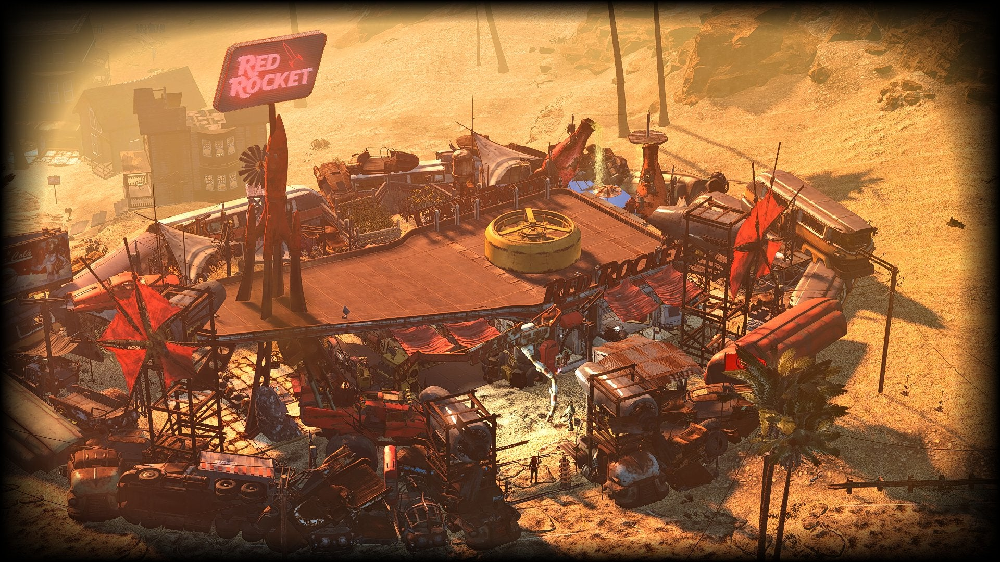

This was once Concord's nuclear coolant replenishment and service station. Before the Great War, employees there won the Trashbusters Award "for the greatest year-to-year waste reduction by a single store." However, the company was unaware of the dumping of hazardous materials in a cave located beneath the station instead of following proper disposal practices.
After the war, it sits abandoned and uninhabited, with the exception of a lone dog and a few mole rats.